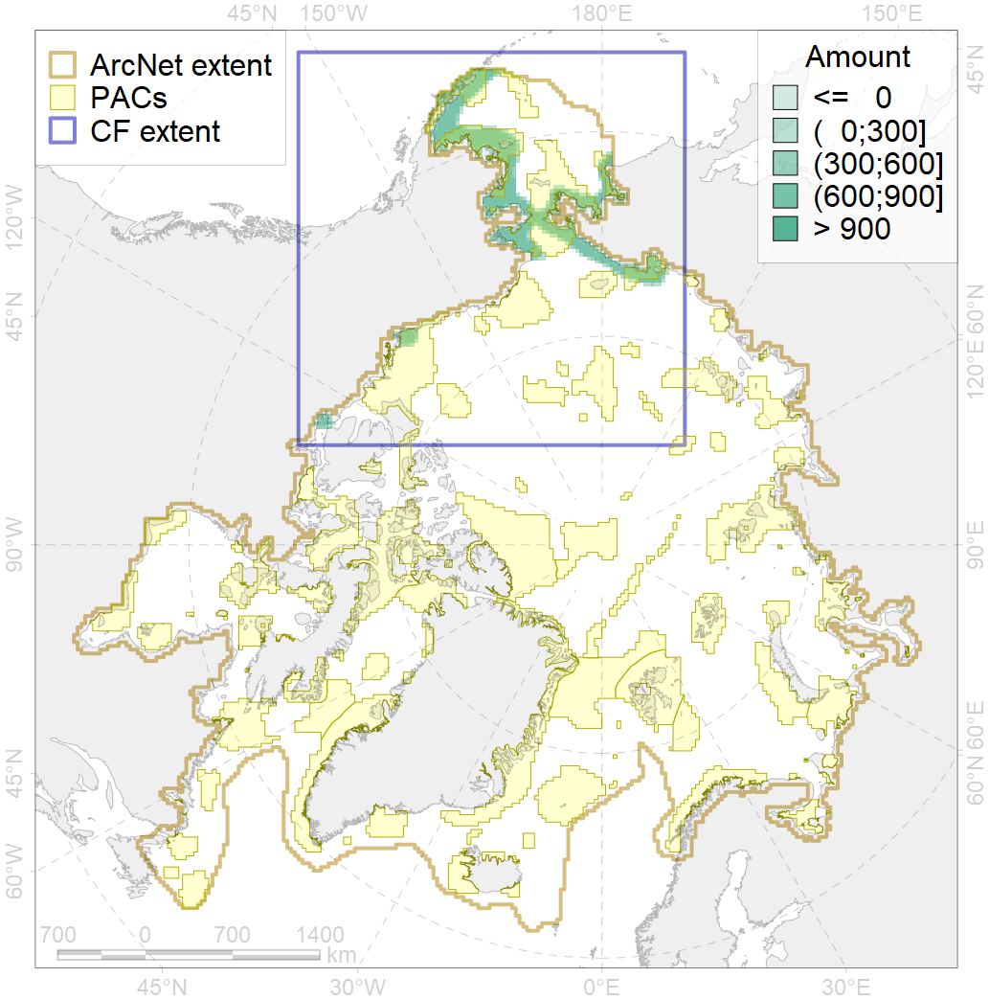
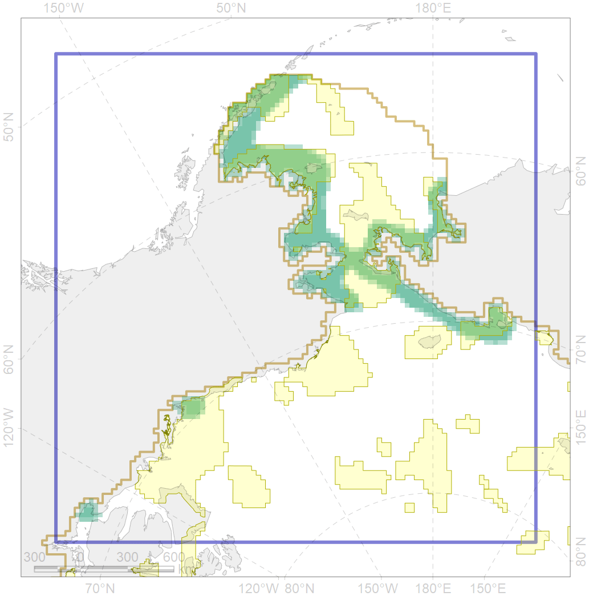

4026

| CF code | 4026 |
| CF name | Feeding/migration area of the Chinook Salmon (Oncorhynchus tshawytscha) |
| Time Period | 1950-2010s |
| Source(s) | Scott, Crossman, 1973; Chereshnev, 2008; Reshetnikov, 2010; Coad, Reist, 2018 |
| Seasonality | May-Nov |
| Depth Horizon | 0-150 |
| Methodology | Compiled from literature sources based on field observations |
| Use Restrictions | Open access |
| Author Name | N. Chernova |
| Notes | |
| Scenario’s Target | 0.06 |
| Target Achievement | 0.551 (Scenario: 918.1%) |
| PAC | Share of the Total Amount within the PAC | Share of the Target Achievement for the ArcNet | PAC’s Contribution to the Target Achievement |
|---|---|---|---|
| 1 | 8.8% | 144.8% | 15.8% |
| 2 | 0.3%0.3% | 5.1%5.2% | 0.6%0.6% |
| 3 | 18.1%20.1% | 286.2%311.9% | 31.2%34.0% |
| 4 | 2.9%3.6% | 37.7%48.2% | 4.1%5.2% |
| 5 | 14.5%16.0% | 221.1%240.9% | 24.1%26.2% |
| 6 | 0.1%0.3% | 1.8%5.6% | 0.2%0.6% |
| 8 | 5.9%5.9% | 80.0%80.1% | 8.7%8.7% |
| 62 | 2.9%2.9% | 46.7%47.9% | 5.1%5.2% |
| inner | 53.5%58.0% | 823.3%884.6% | 89.7%96.3% |
| outer | 46.5%59.5% | 94.8%284.8% | 10.3%31.0% |
| † supplement values are for area consistence whereas principal values are for Accenter compatible gridded stats |